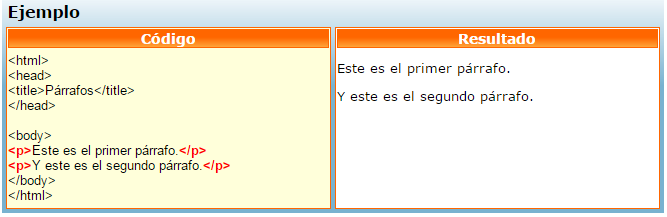

La etiqueta <body> define el cuerpo de un documento.Dentro del cuerpo del documento se incluye todo el contenido del mismo, por ej. textos, enlaces, imágenes, tablas, etc.
A continuación veremos algunas de las etiquetas básicas mas usadas para dar formato al cuerpo del documento:Nos definen el tamaño de un título o cabecera.
<h1> nos dá el tipo de letra más grande.Los párrafos se definen con la etiqueta <p>.

La etiqueta se utiliza para insertar un comentario dentro del código que estamos escribiendo. El mismo es ignorado por el navegador al momento de leerlo. Los comentarios nos sirven para explicar mejor el código y son de gran ayuda en el momento que necesitemos editarlo.
<!-- Esto es un comentario. -->
* Nota que el signo de exclamación se coloca solo al principio del código.
El salto de línea está definido con la etiqueta <br>. Es utilizado cuando queremos cortar una línea sin necesidad de terminar con el párrafo. La etiqueta <br> obliga a saltar de línea dondequiera que la ubiquemos.
La etiqueta <hr> nos permite trazar una línea horizontal como las que separan las distintas secciones de una página web básica.
La etiqueta <hr> no tiene cierre.
Con estas etiquetas ya podemos desarrollar una estructura básica para la etiqueta <body>...</body>